Lecture 2: Stylized Facts, Efficiency and Bubbles
Daniel Traian PELE
Bucharest University of Economic Studies
IDA Institute Digital Assets
Blockchain Research Center
Master Blockchain for Business (MBB), FABIZ
23 November 2026
Lecture 2: Stylized Facts, Efficiency and Bubbles
Lecture 2: Stylized Facts, Efficiency and Bubbles
Daniel Traian PELE
Bucharest University of Economic Studies
IDA Institute Digital Assets
Blockchain Research Center
Master Blockchain for Business (MBB), FABIZ
23 November 2026
“A market in which prices always ‘fully reflect’ available information is called ‘efficient.’ ” — Fama (1970)
The lecture asks how crypto prices behave and what that behaviour means for a business that holds, accepts or prices crypto assets. A treasurer, an exchange or a fund cannot work with general statements such as "crypto is risky"; each needs numbers: how large a typical daily move is, how often an extreme move occurs, and whether the risk changes over time.
The route has five steps. The first turns prices into returns on a market that trades seven days a week. The second describes the shape of the return distribution, with its heavy tails and frequent crashes. The third follows volatility through time and compares the behaviour of Bitcoin with that of equities and gold. The fourth tests whether past prices predict returns, the question of market efficiency. The fifth studies bubbles, drawdowns and network value through Metcalfe's law. Lecture 4 then builds models for the facts found here: generalised autoregressive conditional heteroskedasticity (GARCH) models for volatility, and value at risk (VaR) and expected shortfall (ES) for tail risk.
In brief
Two papers are the core reading. Trimborn & Härdle (2018) construct CRIX, the value-weighted market index for cryptocurrencies already used in Lecture 1. Peterson (2018) applies Metcalfe's law, the idea that the value of a network grows with the square of its users, to Bitcoin; the last section of the lecture tests this idea on the data. For further reading, Pele et al. (2023) ask whether crypto assets are becoming alternative assets, a class of their own next to equities, bonds and commodities.
Two video units of the Quantinar course Blockchain Analytics accompany the lecture. The data are the daily closes of Bitcoin, Ethereum, the S&P 500 and gold from 2018 to 18 September 2026, from EODHD, and the daily on-chain transactions of Bitcoin from 2014 to 2025, from the ETH Chronicles project used in Lecture 1. The notebook of Lecture 2 in the course repository computes every number and chart of the lecture.
In brief
Eugene F. Fama Photo: Bengt Nyman (2013), CC BY 2.0, Wikimedia Commons
A market in which prices always “fully reflect” available information is called “efficient.”
Lecture 1 described crypto markets through levels: market values, supplies, transactions and their growth over a decade. A business that holds, accepts or prices crypto assets needs a different kind of number. A treasurer who keeps bitcoin on the balance sheet must know how much the position can move in a day or a year; an exchange must know how often extreme days occur; a fund must know whether past prices contain information about future returns. All of these questions are about returns, the changes of prices, and about the statistical behaviour of those changes.
The lecture therefore turns the prices of Lecture 1 into daily returns and studies their properties. It measures the volatility and the shape of the return distribution, shows that the Normal distribution understates the frequency of crashes, follows volatility and the correlation with equities through time, and tests whether past returns help to predict future ones. The last part asks two valuation questions: how far prices can fall from a peak, and whether bubble models or network activity can explain the price.
The data are daily closing prices of Bitcoin, Ethereum, the S&P 500 stock index and gold from 1 January 2018 to 18 September 2026, from the data vendor EOD Historical Data (EODHD), with longer samples from 2014 for some tests, and the monthly on-chain transactions of Bitcoin from 2014 to 2025 used in Lecture 1.
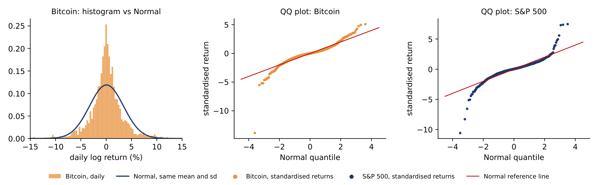
The Appendix holds optional worked examples and checks.
Prices of crypto assets range from a few cents to tens of thousands of US dollars (USD) and grow by large factors over time, so their levels cannot be compared across assets or periods. Returns can. The section defines the daily log return and shows how to turn the variability of daily returns into an annual figure, a step where a wrong calendar produces a large error.
The daily log return in percent is
where \(P_t\) is the closing price on day \(t\). Log returns add up over time, as Lecture 1 showed, and for small changes they are close to the percentage change of the price. The volatility of an asset is the standard deviation \(s\) of its daily returns: it measures how far a typical day's return lies from the average.
Volatility is usually quoted per year. If the daily returns are independent, the variance of a sum of \(A\) daily returns is \(A\) times the daily variance, so the annual volatility is
where \(A\) is the number of returns in a year. Crypto trades every day of the year, so \(A = 365\); stock exchanges are closed at weekends and on holidays, so for equities \(A \approx 252\) trading days.
For Bitcoin from 2018 to 2026 the daily standard deviation is \(s = 3.355\%\). The right calculation is \(\sqrt{365} \times 3.355 = 19.10 \times 3.355 = 64.1\%\) a year. Using the equity calendar gives \(\sqrt{252} \times 3.355 = 53.3\%\), an understatement of 17%. The rule is to annualise each asset with its own calendar and to compare assets only after this step.
In brief
The chart shows the same data twice. The top panel is the daily closing price of Bitcoin in USD on a log scale, from 1 January 2018 to 18 September 2026; the bottom panel is the daily log return of formula (2.1), in percent, for the same 3,183 days, with dotted lines at \(\pm 5\%\).
The two panels tell different stories. The price trends and swings: it fell below 4,000 USD at the end of 2018, rose above 60,000 USD in 2021 and above 120,000 USD in 2025. The returns have no trend at all; they stay around zero, with bursts of large moves in some periods and quiet stretches in others. On 340 days, 10.7% of the sample, the return was beyond \(\pm 5\%\).
The extremes are single days. The worst, 12 March 2020, was a log return of \(-46.5\%\), during the COVID-19 crash; the best, 8 February 2021, was \(+17.2\%\). The two panels are tied by the additivity of log returns: the sum of the 3,183 daily returns, 174.3, equals \(100\ln(P_{\text{end}}/P_{\text{start}})\), the log return of the whole period.
In brief
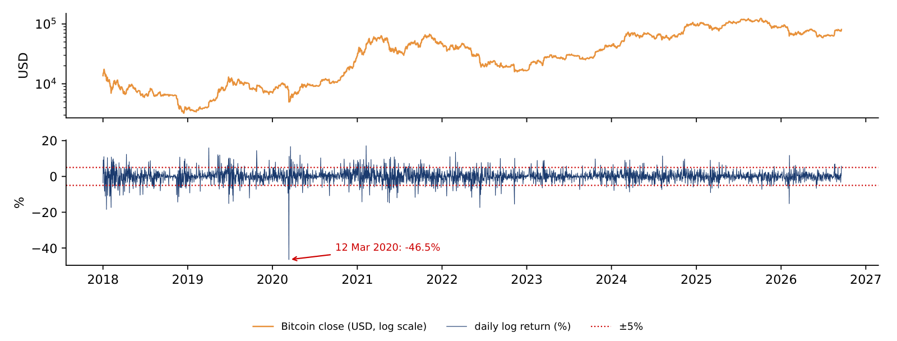
Volatility measures the typical size of a daily move, but not how often extreme moves occur. The section describes the whole distribution of daily returns with four moments, tests whether the distribution is Normal, compares four assets and computes how rare a crash would be if returns were Normal.
Four summary statistics describe a distribution of \(n\) daily returns \(r_1, \dots, r_n\). The mean \(\bar r\) is the average return and the standard deviation \(s\) the volatility, as in the previous section. The skewness \(\hat S\) is the average of the cubed standardised returns \((r_t - \bar r)/s\): it is 0 for a symmetric distribution and negative when large losses are more frequent or larger than large gains. The excess kurtosis \(\hat K\) is the average of the standardised returns to the fourth power, minus 3: it is 0 for the Normal distribution and positive when extreme days, in either direction, are more frequent than the Normal predicts. The formulas are on the slide.
The Jarque–Bera (JB) test combines skewness and kurtosis into one test of normality:
Under the null hypothesis that returns are Normal, JB follows approximately a chi-squared distribution with 2 degrees of freedom, \(\chi^2_2\), whose 5% critical value is 5.99. Normality is rejected at the 5% level when JB exceeds 5.99.
For daily returns from 2018 to 2026 the statistic is 29,620 for Bitcoin, 16,593 for Ethereum, 20,462 for the S&P 500 and 10,041 for gold. All four are thousands of times larger than the critical value, so normality is rejected for every asset, equities and gold included.
In brief
For Bitcoin from 2018 to 2026 the sample has \(n = 3{,}183\) daily returns, a skewness of \(\hat S = -0.945\) and an excess kurtosis of \(\hat K = 14.825\). Formula (2.3) gives \(3{,}183/6 = 530.5\) times the sum of \(0.945^2 = 0.893\) and \(14.825^2/4 = 54.945\), that is \(530.5 \times 55.838 \approx 29{,}620\). The p-value, the probability of a statistic at least this large if returns were Normal, is below \(10^{-300}\).
The decomposition shows where the rejection comes from: the kurtosis term contributes 54.9 of the 55.8 inside the brackets, the skewness term only 0.9. The problem with the Normal distribution is the tails, not the asymmetry.
The test needs a careful reading. With a sample of several thousand days, JB rejects even small departures from normality, so a tiny p-value alone says little about how large the departure is. The size of \(\hat K\), here almost 15, is the informative number: it says that extreme days are far more frequent than under the Normal.
In brief
The table compares the daily log returns of four assets from 1 January 2018 to 18 September 2026. Each asset is measured on its own calendar: Bitcoin and Ethereum have a return for every day, 3,183 in total, annualised with \(A = 365\); the S&P 500 and gold have Monday-to-Friday closes, 2,189 and 2,268 returns, annualised with \(A = 252\).
The columns give the number of returns \(n\), the daily standard deviation, the annual volatility from formula (2.2), the skewness, the excess kurtosis, the worst day as a log return in percent, and the share of days with a move larger than 5% in either direction.
Bitcoin's annual volatility is 64.1%, against 19.2% for the S&P 500: it is 3.3 times as volatile. Ethereum is more volatile still, at 84.3%, and gold is the calmest asset, at 16.9%. Bitcoin moves by more than 5% on 10.7% of days, about one day in nine, while the S&P 500 does so on 0.6% of its trading days and gold on 0.3%. The worst day was the same for both crypto assets, 12 March 2020, during the market crash at the start of the coronavirus disease 2019 (COVID-19) pandemic: \(-46.5\%\) for Bitcoin and \(-55.1\%\) for Ethereum.
All four assets have negative skewness, so large losses are more frequent or larger than large gains, and all four have large positive excess kurtosis, between 10.2 for gold and 14.9 for the S&P 500. Heavy tails are therefore not specific to crypto; what distinguishes crypto is the scale of the moves.
In brief
| \(n\) | sd (%) | ann. vol. (%) | skewness | excess kurtosis | worst day (log %) | days \(|r| > 5\%\) (%) | |
|---|---|---|---|---|---|---|---|
| Bitcoin | 3 183 | \(3.36\) | \(64.1\) | \(-0.95\) | \(14.8\) | \(-46.5\) | \(10.7\) |
| Ethereum | 3 183 | \(4.41\) | \(84.3\) | \(-0.83\) | \(11.1\) | \(-55.1\) | \(17.8\) |
| S&P 500 | 2 189 | \(1.21\) | \(19.2\) | \(-0.65\) | \(14.9\) | \(-12.8\) | \(0.6\) |
| Gold | 2 268 | \(1.07\) | \(16.9\) | \(-0.55\) | \(10.2\) | \(-11.1\) | \(0.3\) |
The chart shows the departure from normality in two ways. The left panel is a histogram of Bitcoin's daily returns with the Normal density of the same mean and standard deviation drawn over it. Compared with this curve, the data have too many quiet days near zero, too many extreme days in both tails, and too few days in between.
The middle and right panels are quantile–quantile (QQ) plots. The returns are standardised, sorted from the smallest to the largest and plotted against the quantiles a Normal distribution would give for a sample of the same size. If the returns were Normal, the points would lie on the red line.
Both QQ plots follow the line in the centre and bend away from it at both ends: the lowest returns are much lower and the highest much higher than the Normal predicts. For Bitcoin the lowest point, 12 March 2020, lies near \(-14\) standard deviations; for the S&P 500 the lowest lies near \(-10\). Heavy tails are a feature of crypto and of equities.
In brief
To judge how extreme a day is, each return is standardised: \(z_t = (r_t - \bar r)/s\) counts how many standard deviations it lies from the mean. Under the Normal distribution, a move of more than 3 standard deviations in either direction has a probability of 0.27%, and a move of more than 4 standard deviations a probability of 0.0063%. In 3,183 days the Normal therefore predicts 0.2 days beyond 4 standard deviations, that is, most probably none.
Bitcoin had 17 days beyond 4 standard deviations between 2018 and 2026. The worst day, 12 March 2020, had a log return of \(-46.5\%\), that is \(z = -13.9\). As a simple return, the change in the value held, this is \(e^{-0.465} - 1 = -37.2\%\). Under the Normal distribution the probability of a day at least this bad is about \(5 \times 10^{-44}\), which means once in \(2 \times 10^{43}\) days.
The practical lesson is that a risk model built on the Normal distribution will be surprised many times by days it treats as practically impossible. Lecture 4 replaces the Normal with a heavy-tailed distribution and lets volatility change over time.
In brief
The previous slide compared one threshold, 4 standard deviations, with the Normal distribution. The chart repeats the comparison for thresholds \(k = 2, 3, 4, 5\) and 6. For each \(k\), the first bar counts the days of 2018–2026 with \(|z_t| > k\); the second bar is the number a Normal distribution with the same mean and standard deviation would give, \(n \times P(|z| > k)\). The vertical axis is on a log scale, because the expected numbers fall from about a hundred to one in a million.
At \(k = 2\) the Normal does well: Bitcoin had 185 such days against 145 expected, and the S&P 500 99 against 100. The moderate days are where the Normal distribution fits. Further out the gap opens quickly. At \(k = 4\) Bitcoin had 17 days against 0.20 expected, 84 times as many, and the S&P 500 15 against 0.14, 108 times as many. At \(k = 6\) Bitcoin had 1 day and the S&P 500 6 days, while the Normal expects one such day in 507 million.
The ratio of observed to expected days rises with \(k\) for both assets. This is what a heavy tail means: the problem of the Normal distribution is not the typical day but the rare ones, which are exactly the days that matter for risk management. The S&P 500, with far smaller moves, has tails as heavy relative to its own volatility as Bitcoin's.
In brief
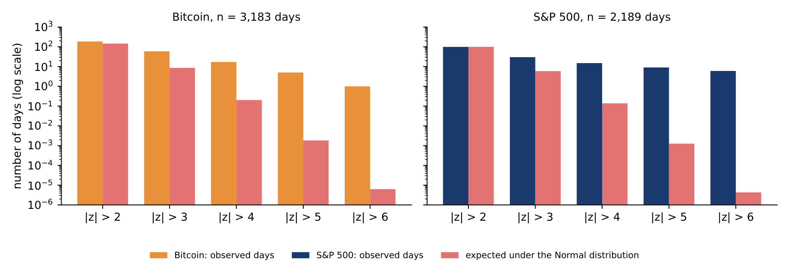
The expected counts in the chart come from the Normal probabilities. For Bitcoin, 2018–2026, there are \(n = 3{,}183\) daily returns. At \(k = 3\), the probability of a move beyond 3 standard deviations in either direction is \(P(|z| > 3) = 2 \times 0.00135 = 0.00270\), so the Normal expects \(3{,}183 \times 0.00270 = 8.6\) days. The data have 59, seven times as many.
At \(k = 4\), \(P(|z| > 4) = 2 \times 3.17 \times 10^{-5} = 6.33 \times 10^{-5}\), and the expected number is \(3{,}183 \times 6.33 \times 10^{-5} = 0.20\) days. The data have 17, 84 times as many.
The same numbers can be stated as waiting times. Under the Normal, a day beyond 4 standard deviations comes on average once every \(1/(6.33 \times 10^{-5}) = 15{,}787\) days, about 43 years. In the data it came once every \(3{,}183/17 = 187\) days, about every six months. A risk limit calibrated on Normal tail probabilities treats a twice-a-year event as a once-in-two-generations event.
In brief
Section summary
Daily crypto returns are far from Normal: the Jarque–Bera test rejects normality for all four assets, almost entirely because of the tails, and Bitcoin had 17 days beyond 4 standard deviations where the Normal predicts 0.2. Equities and gold also have heavy tails; crypto differs mainly by the size of its moves.
A single volatility number for a whole sample hides how risk changes over time. The section measures volatility on moving windows, tests whether returns and squared returns are autocorrelated, shows the resulting volatility clusters, and follows the correlation between Bitcoin and equities.
Rolling volatility is the standard deviation of returns on a window of recent days, recomputed each day as the window moves forward by one day. Here the window covers about one month: 30 daily returns for crypto, annualised with \(\sqrt{365}\), and 21 trading days for the S&P 500, annualised with \(\sqrt{252}\). The Appendix gives the formula and the precision of the estimate.
The chart shows the three series from 2016 to September 2026, in percent per year. The median rolling volatility is 54% for Bitcoin, 77% for Ethereum and 12% for the S&P 500. All three reach their highest values in March–April 2020, during the COVID-19 crash, when even the S&P 500 came close to 100% a year for a short period.
Bitcoin's volatility trends down over the decade: its peaks after 2023 are lower than those of 2016–2021. It nevertheless stays well above that of equities: Bitcoin's rolling volatility was below that of the S&P 500 on only 0.1% of the days. The chart also shows that high-volatility periods last for weeks or months rather than single days, a pattern the next two slides measure.
In brief
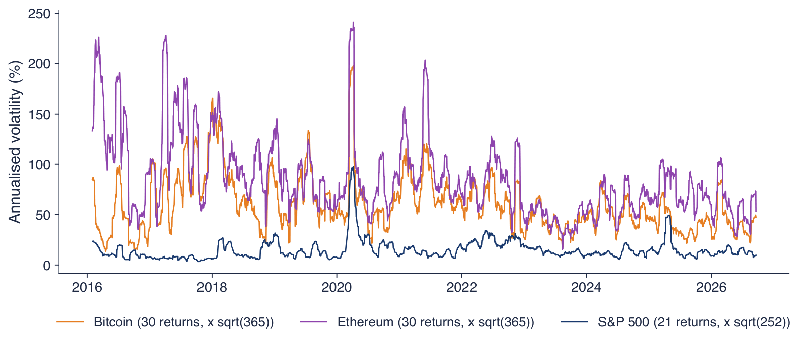
The sample autocorrelation at lag \(k\), \(\hat\rho(k)\), is the correlation between the return on a day and the return \(k\) days earlier; the formula is on the slide. If returns are independent, \(\hat\rho(k)\) lies within \(\pm 1.96/\sqrt n\) of zero with probability 95%. The autocorrelation function (ACF) is the list of \(\hat\rho(k)\) for \(k = 1, 2, \dots\). The ACF of the returns \(r_t\) asks whether the direction of a move is predictable; the ACF of the squared returns \(r_t^2\) asks whether the size of a move is predictable.
The Ljung–Box test checks the first \(m\) autocorrelations together:
Under the null hypothesis of no autocorrelation, \(Q(m)\) follows approximately a \(\chi^2_m\) distribution, and large values reject.
For Bitcoin's daily log returns from 18 September 2014 to 18 September 2026, \(n = 4{,}384\), with \(m = 10\) lags, the 5% critical value of \(\chi^2_{10}\) is 18.3. For the returns \(Q = 20.2\), with a p-value of 0.028: a rejection, but only just. For the squared returns \(Q = 212.7\), more than ten times the critical value. Returns have weak dependence; squared returns have strong dependence.
In brief
Formula (2.4) can be computed by hand for \(m = 2\) lags: \(Q(2) = n(n+2)\big[\hat\rho(1)^2/(n-1) + \hat\rho(2)^2/(n-2)\big]\). For Bitcoin's daily log returns since 2014, \(n = 4{,}384\).
For the returns, \(\hat\rho(1) = -0.0223\) and \(\hat\rho(2) = 0.0121\), so the squared autocorrelations are 0.000498 and 0.000147. Then \(Q(2) = 4{,}384 \times 4{,}386 \times (0.000498/4{,}383 + 0.000147/4{,}382) = 2.83\). The 5% critical value of \(\chi^2_2\) is 5.99, and the p-value is 0.24: we do not reject the hypothesis of no autocorrelation at two lags.
For the squared returns, \(\hat\rho(1) = 0.1367\) and \(\hat\rho(2) = 0.0527\), and the same computation gives \(Q(2) = 94.2\), with a p-value of about \(4 \times 10^{-21}\): the hypothesis is rejected. Because \(n(n+2)/(n-1) \approx n\), each term is close to \(n\,\hat\rho(k)^2\), and the first term alone, \(4{,}384 \times 0.0187 = 81.9\), already decides the test.
The same conclusion appears one lag at a time. The 95% band of a single autocorrelation is \(\pm 1.96/\sqrt{4{,}384} = \pm 0.030\); the lag-1 autocorrelation of the returns lies inside it, that of the squared returns more than four times outside.
In brief
The chart shows the two autocorrelation functions for lags of 1 to 30 days; the dashed lines are the 95% band \(\pm 1.96/\sqrt n\) under independence. In the left panel, the autocorrelations of the returns are small and mostly inside the band, with a few bars just outside it: the direction of tomorrow's move is hard to predict from past moves.
In the right panel, the autocorrelations of the squared returns are all positive and many lie above the band, the largest above 0.1 at lags 1 and 7. The size of tomorrow's move is therefore partly predictable: calm days tend to follow calm days, and turbulent days follow turbulent days.
This pattern is called volatility clustering. It explains the long high-volatility periods in the previous chart and is the basis of the GARCH models of Lecture 4, which forecast tomorrow's variance from today's squared return and today's variance.
In brief
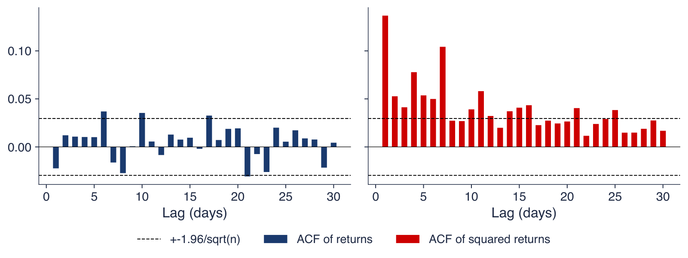
The autocorrelations of squared returns measure volatility clustering through a correlation coefficient. The chart shows the same fact more directly. The days of 2018–2026 are sorted into five groups of equal size, quintiles, by the absolute return of the previous day, from the calmest fifth to the most turbulent fifth. Each bar is the mean absolute return today in that group; the dashed line is the mean over all days.
If yesterday's move carried no information, the five bars would all be at the dashed line. They are not. For Bitcoin, the mean absolute return is 1.86% after the calmest days and 2.77% after the most turbulent, 1.49 times as much; the mean over all days is 2.21%. For the S&P 500 the figures are 0.65% and 1.17%, 1.80 times as much, around a mean of 0.79%.
The size of yesterday's move therefore says something about the size of today's move, although not about its direction. This is the volatility clustering of the previous chart, expressed in percent a day, and it is the property that the GARCH models of Lecture 4 use to forecast volatility.
In brief
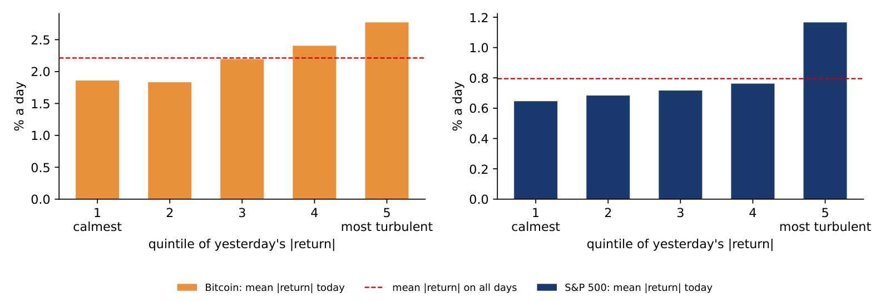
A rolling correlation measures the correlation of daily returns on a moving window, here 250 common trading days, about one year of equity trading. Because Bitcoin trades every day and the S&P 500 only on weekdays, the prices are first joined on the days when both are quoted and the returns are computed afterwards; Monday's Bitcoin return then covers Friday to Monday, like the equity return. The Appendix discusses this choice.
The chart shows three rolling correlations: Bitcoin with the S&P 500, Ethereum with the S&P 500 and Bitcoin with gold; vertical lines mark the COVID-19 crash, the collapse of the stablecoin TerraUSD and its sister token Luna (Terra/Luna), the bankruptcy of the crypto exchange FTX, and the approval of spot Bitcoin exchange-traded funds (ETFs).
Before 2020 Bitcoin had no link with the S&P 500: the average correlation was 0.02. From 2020 the average was 0.39, with a peak of 0.57 in February 2023, and Ethereum followed the same path. Since 2020 Bitcoin co-moves with equities in the way a risk asset does, an asset that rises when investors take more risk and falls when they reduce it; in 2022 both fell while interest rates rose. After 2020 the correlation of Bitcoin with gold stayed below its correlation with equities. The chart shows co-movement, not its cause.
In brief
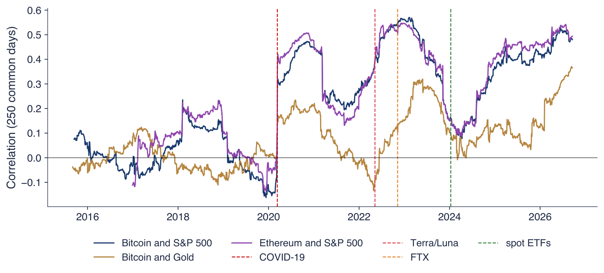
Section summary
Volatility changes strongly over time and comes in clusters: squared returns are clearly autocorrelated even though returns themselves are hardly predictable. Since 2020 Bitcoin's returns have been correlated with equity returns, around 0.4 on average, so a crypto position adds to equity risk rather than offsetting it.
If past prices helped to predict returns, a trader could profit from the pattern. The section states what weak-form efficiency means, introduces the variance ratio as a test of one of its implications, applies the test to Bitcoin, Ethereum and the S&P 500 over the full sample and on moving windows, and lists what the test leaves open.
Fama (1970) classifies market efficiency by the information that prices reflect. In a weak-form efficient market, past prices do not help to predict future returns. The argument is competitive: if a pattern in past prices predicted returns, traders would buy or sell on it, and their trades would move prices until the pattern disappeared.
The variance ratio (VR) of Lo & MacKinlay (1988) tests one implication of this idea. It compares the variance of returns over \(q\) days with \(q\) times the variance of daily returns:
If returns are uncorrelated, as under a random walk of log prices, the variance of a \(q\)-day return is exactly \(q\) times the daily variance and \(\mathrm{VR}(q) = 1\). If positive days tend to follow positive days (trends, or momentum), multi-day moves are larger than this and \(\mathrm{VR}(q) > 1\); if moves tend to reverse (mean reversion), \(\mathrm{VR}(q) < 1\).
The test statistic \(Z^*(q)\) of Lo & MacKinlay (1988) compares the estimated ratio with 1 and remains valid when volatility clusters, as it does here; the Appendix gives the formula. The hypothesis \(\mathrm{VR}(q) = 1\) is rejected at the 5% level when \(|Z^*| > 1.96\). A non-rejection says that no linear autocorrelation of returns up to horizon \(q\) was detected, which is only one implication of weak-form efficiency.
In brief
The table reports the variance ratios at horizons of 2, 5 and 10 days and the robust statistic \(Z^*(5)\) with its p-value, for daily log returns from 2014 (Ethereum from 2016) to 18 September 2026.
All variance ratios lie close to 1. Bitcoin's are 0.977, 0.991 and 1.027, Ethereum's 0.988, 1.067 and 1.137. The S&P 500 has ratios below 1, from 0.875 at 2 days to 0.813 at 10 days, a sign of mild mean reversion in the point estimates. The robust test does not reject \(\mathrm{VR}(5) = 1\) at 5% for any asset: \(Z^*(5)\) is \(-0.19\) for Bitcoin (p-value 0.853), 1.17 for Ethereum (0.241) and \(-1.28\) for the S&P 500 (0.201). The same holds in each of the sub-periods 2014–2017, 2018–2021 and 2022–2026.
The correct reading is limited. We do not detect the tested deviation from a random walk at these horizons, but a non-rejection does not prove that the market is efficient. Whether a trading strategy would be profitable after trading costs and an adjustment for risk is a separate question that this test does not answer.
In brief
| VR(2) | VR(5) | VR(10) | \(Z^*(5)\) (p-value) | |
|---|---|---|---|---|
| Bitcoin | \(0.977\) | \(0.991\) | \(1.027\) | \(-0.19\) (0.853) |
| Ethereum | \(0.988\) | \(1.067\) | \(1.137\) | \(1.17\) (0.241) |
| S&P 500 | \(0.875\) | \(0.849\) | \(0.813\) | \(-1.28\) (0.201) |
The table above stated that no sub-period rejects the random walk. The chart shows the numbers behind that statement: the robust statistic \(Z^*(5)\) for Bitcoin, Ethereum and the S&P 500 in three sub-periods, 2014–2017 (Ethereum from 2016), 2018–2021 and 2022 to 18 September 2026. The dashed lines at \(\pm 1.96\) are the 5% rejection limits.
For Bitcoin, \(Z^*(5)\) is \(-0.23\), \(-0.25\) and \(+0.18\); for Ethereum \(+1.03\), \(-0.04\) and \(+0.20\); for the S&P 500 \(-0.68\), \(-0.95\) and \(-0.85\). No bar crosses the limits, so we do not reject the random walk in any sub-period for any of the three assets.
The S&P 500 has variance ratios below 1 in every sub-period, \(\mathrm{VR}(5) = 0.92\), 0.78 and 0.92: the point estimates show the mild mean reversion typical of an index, but the robust test does not find it significant. Crypto returns have no consistent sign at all.
In brief
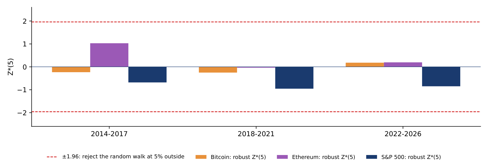
A test on the full sample could hide periods of predictability that cancel out. The chart therefore computes the robust \(Z^*(5)\) on moving windows of 500 days, one window every 21 days, for Bitcoin, Ethereum and the S&P 500; the dashed lines at \(\pm 1.96\) are the 5% rejection limits.
No 500-day window rejects \(\mathrm{VR}(5) = 1\) for Bitcoin at 5%: the statistic stays between about \(-1.5\) and 1.1. The other two series also stay inside the limits, with the S&P 500 mostly below zero, in line with its variance ratios below 1.
The result fits the literature. Early studies, such as Urquhart (2016), found Bitcoin inefficient in samples ending in 2013–2016, and Tran & Leirvik (2020) find that crypto markets became more efficient as they grew.
In brief
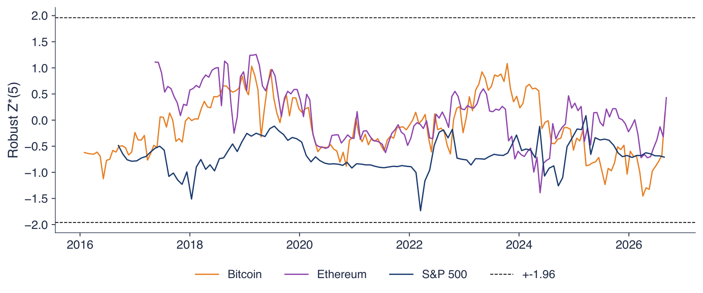
Not rejecting \(\mathrm{VR} = 1\) means that no linear predictability of returns from past returns was detected at the horizons tested. Other patterns are not tested: nonlinear dependence, such as the volatility clustering of the previous section, and predictability conditional on trading volume or news. Even full weak-form efficiency, moreover, says nothing about whether the price is right.
A price can be unpredictable and still be far from any fundamental value. For a share, the fundamental value is the present value of its future dividends or profits. Bitcoin has no cash flows, no dividends and no profits to discount, so a "fundamental value" must come from its use: payments, settlement, collateral, or the size of its network.
Two questions remain for the rest of the lecture. How far can the price fall from a peak, which is measured by drawdowns? Can a bubble be detected, and does network activity justify the price? The log-periodic power law (LPPL) and Metcalfe's law address the second question.
In brief
Section summary
Variance-ratio tests do not reject a random walk for Bitcoin, Ethereum or the S&P 500 at horizons of 2 to 10 days, on the full sample, in sub-periods or on 500-day windows. This is evidence against simple linear predictability, not proof of efficiency, and it says nothing about whether the price level is justified.
The section turns from returns to price levels. It measures the depth and duration of falls from a peak, fits a model of speculative bubbles to the Bitcoin boom of 2017 and checks how stable its forecast is, and tests whether Bitcoin's market value follows the size of its network as Metcalfe's law states.
The drawdown on day \(t\) is the loss from the highest price reached so far:
It is 0 on a day with a new record high and negative otherwise. The maximum drawdown is the deepest fall over the sample, and the time under water is the number of days from a peak until the price sets a new record.
Losses and gains are not symmetric. After a loss of \(d\), the price must rise by \(d/(1 - d)\) to return to its peak. A loss of 50% needs a gain of 100%, a loss of 75% a gain of 300%, and a loss of 83.4%, Bitcoin's maximum drawdown in the next chart, a gain of 502%.
Managers care about drawdowns because a firm that holds crypto on its balance sheet reports the value of the position at the reporting date; a deep drawdown appears in the accounts, whatever the average return over the years.
In brief
The chart draws the relation between a drawdown \(d\) and the gain \(d/(1-d)\) that brings the price back to its record, as a red curve on a log scale. The dotted green line is the gain equal to the loss that intuition suggests. The points mark the maximum drawdowns of three assets, measured on daily closes since 2016.
The S&P 500 fell by at most 33.9%, in March 2020; a gain of 51% recovered it. Bitcoin fell by 83.4% by December 2018, which required a gain of 502%, and Ethereum by 94.0% at the same time, which required 1,556%.
The curve always lies above the dotted line and bends upward: every extra point of loss needs more than one point of gain, and beyond a loss of 50% the gain needed exceeds 100%. For deep falls the curve explodes, which is why the maximum drawdowns of crypto translate into years under water.
In brief
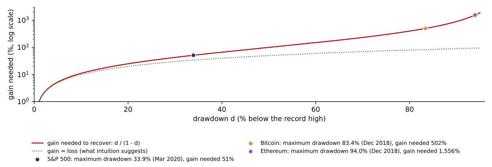
Bitcoin set a record of 67,567 USD on 8 November 2021 and fell to 15,787 USD on 21 November 2022. The first step is the depth of the fall, \(d = 1 - 15{,}787/67{,}567 = 76.6\%\). The second step is the gain needed to recover, \(d/(1-d) = 0.766/0.234 = 328\%\), which is the same as \(67{,}567/15{,}787 - 1\): the price had to multiply by 4.28.
The third step is the time. The price set a new record on 4 March 2024, 847 days after the peak and 469 days after the trough. The fourth step measures the speed of the recovery: a factor of 4.28 in 469 days, or 1.28 years, is a growth rate of \(4.28^{1/1.28} - 1 = 210\%\) a year from the trough. At a steady 50% a year, the same recovery would have taken \(\ln 4.28/\ln 1.5 = 3.6\) years.
The time under water therefore depends on how fast the price rises after the trough, which nobody knows at the trough. A treasurer who holds crypto through a drawdown must be able to wait for years, not months.
In brief
The chart plots the drawdown, formula (2.6), of Bitcoin, Ethereum and the S&P 500 from the daily closes since 2016. A line at 0 means the asset is at a record high; the depth below 0 is the percentage loss from the last record.
The maximum drawdowns were \(-83.4\%\) for Bitcoin, \(-94.0\%\) for Ethereum and \(-33.9\%\) for the S&P 500. The two crypto assets had two long periods far below their records, from 2018 to 2020 and from 2022 to 2023, while the S&P 500's deepest fall, in March 2020, was recovered within months.
The time spent below the record is as informative as the depth: Bitcoin spent 76% of the days more than 10% below its record high, the S&P 500 16%. Holding Bitcoin means being in a substantial loss from the peak most of the time.
In brief
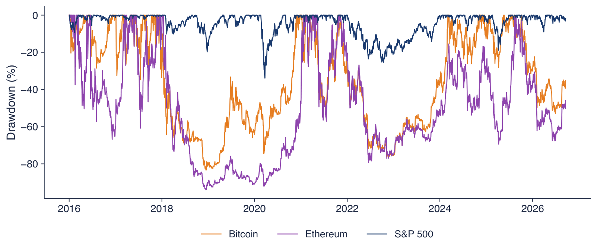
A bubble is a price far above any fundamental value, sustained by the expectation that the asset can be sold later at an even higher price. Cheah & Fry (2015) find that the price of Bitcoin shows speculative bubbles.
Johansen, Ledoit & Sornette (2000) model how such a bubble ends. Traders imitate each other, and imitation creates positive feedback: rising prices attract buyers, who push prices higher. Prices then grow faster than exponentially, which means that the growth rate itself grows. In the model, the hazard rate of a crash, the probability of a crash in the next instant given that none has happened yet, rises as the price approaches a critical time \(t_c\).
Markets are organised in a hierarchy, from individual traders to funds to whole markets, and imitation acts at each level. This hierarchy adds oscillations to the price path, and the oscillations speed up as \(t_c\) approaches. The result is the log-periodic power law (LPPL), written out on the next slide. The photograph shows Didier Sornette, a co-author of the model.
In brief
 Didier Sornette, co-author of the LPPL model Photo: Didier Sornette (2012); CC BY-SA 3.0 DE; Wikimedia Commons
Didier Sornette, co-author of the LPPL model Photo: Didier Sornette (2012); CC BY-SA 3.0 DE; Wikimedia Commons The LPPL model describes the expected log price before the critical time, for \(t < t_c\):
where \(\varepsilon_t\) is the error. The critical time \(t_c\) is the end of the bubble regime implied by the fitted model, not a guaranteed crash date, and \(A\) is the log price the model reaches at \(t_c\). The term \(B(t_c - t)^m\) produces the super-exponential growth: with \(B < 0\) and \(0 < m < 1\), \((t_c - t)^m\) shrinks to 0 as \(t\) approaches \(t_c\), so the log price rises towards \(A\) at an increasing speed. The cosine term adds the oscillations, with amplitude \(C\), log-frequency \(\omega\) and phase \(\phi\).
The oscillations are log-periodic: the cosine depends on \(\ln(t_c - t)\), not on \(t\). Its peaks come at times \(t_k\) with \((t_c - t_{k+1})/(t_c - t_k) = e^{-2\pi/\omega}\), so the gaps between successive peaks shrink by a constant factor and the oscillations accelerate towards \(t_c\). The Appendix works this out for the Bitcoin fit.
The fit imposes ranges on the nonlinear parameters, \(0.1 \le m \le 0.9\) and \(6 \le \omega \le 13\), and requires \(t_c\) to fall after the last observation. After the fit, two conditions must hold to call the episode a bubble: \(\hat B < 0\), for super-exponential growth, and \(|\hat C|/|\hat B| < 1\), so that the oscillations do not dominate the growth.
In brief
The chart fits formula (2.7) to the daily log close of Bitcoin from 1 January to 1 December 2017, \(n = 335\) days. The estimation has two steps, described in the Appendix: least squares for the linear parameters inside a search over \((t_c, m, \omega)\), started from many points because the objective has local minima.
The orange line is the Bitcoin price on a log scale, the blue line the LPPL fit, the green dotted line the end of the estimation window and the red dashed line the estimated critical time, \(\hat t_c = \) 25 December 2017. The actual peak came on 16 December 2017, at 19,497 USD, followed by a fall of 83%.
The fit is close, with \(R^2 = 0.98\): 98% of the variance of the log price in the window is explained by the model. The window, however, was chosen after the crash was known. A good retrospective fit is not a dated forecast: it does not show that the same model, fitted in real time, would have given the right date. The next slide repeats the fit with windows that end at different dates.
In brief
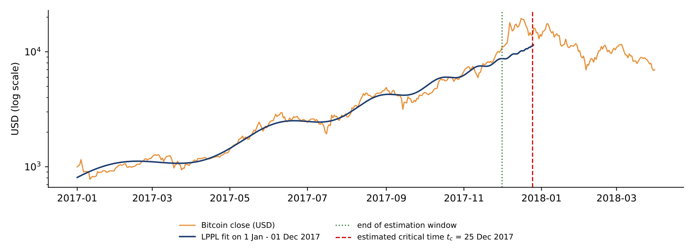
The chart repeats the LPPL fit for eleven windows that all start on 1 January 2017 and end on successive weeks from 1 October to 10 December 2017. The horizontal axis is the end of the window and the vertical axis the estimated critical time \(\hat t_c\); the orange dashed line is the actual peak of 16 December 2017, and the green dotted line the window end, below which \(\hat t_c\) cannot fall.
Nine of the eleven fits, marked with red circles, sit at the bounds of the search, \(m = 0.9\) and \(\omega = 13\), with \(\hat t_c\) between 1 and 7 January 2018. A fit at a bound means that the data push the parameter beyond the allowed range, so the estimate is poorly identified.
Only the window ending on 3 December gives an interior fit, with \(\hat t_c\) = 28 December 2017. The window ending on 10 December collapses onto its own last day, a degenerate solution. In real time, therefore, the model would have produced a series of dates in late December and early January, and only one of the fits would have passed a check of its parameters.
In brief
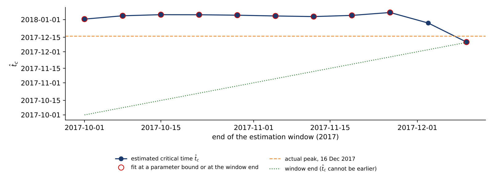
Metcalfe's law states that the value of a network grows with the square of the number of its users \(n\). The reasoning is that \(n\) users can form about \(n^2/2\) connections and that each connection adds value. The law has been used to value telecom and social networks, and Peterson (2018) applies it to Bitcoin.
As a regression on logarithms, the law reads
where \(M_t\) is the market value, \(n_t\) a measure of use, here Bitcoin transactions per day, and \(u_t\) the error. Metcalfe's law predicts \(b = 2\). The coefficient \(b\) is an elasticity: 1% more use goes with \(b\)% more market value.
The data are monthly means from November 2014 to October 2025, 132 months, excluding the 11 erroneous days of 2023 described in Lecture 1. Two limits apply before any chart is drawn. Transactions are not users: one firm can send many transactions, and users of exchanges trade off the chain. And two series that both trend upward can give a high \(R^2\) without a stable link between them, a spurious regression.
In brief
The left panel compares Bitcoin's monthly market value with a Metcalfe value, \(\exp(\hat c + 2\ln n_t)\): the slope is fixed at \(b = 2\), and the constant \(\hat c\) is set so that the ratio of market value to Metcalfe value is 1 on average in logs. Both series are in billions of USD on a log scale.
The right panel plots the ratio of the two, also on a log scale, with reference lines at 0.5, 1 and 2. The ratio was below 0.5 in 2015–2016 and above 4 in 2021 and in 2025, with a maximum of 9.1 in June 2025.
The ratio drifts upwards over the sample: in this period, market value grew faster than transactions, as Lecture 1 also found with the trend regressions. The ratio is a diagnostic that depends on the model, with \(b = 2\), and on the proxy for users, transactions; it is not a fair value, and a ratio above 1 does not by itself show that Bitcoin is overpriced.
In brief
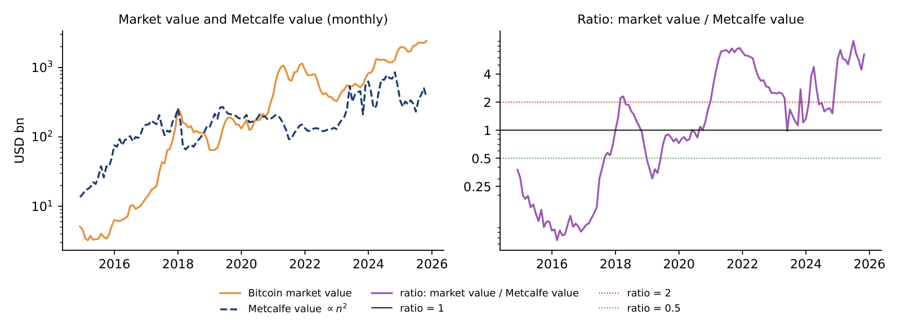
The table estimates formula (2.8). Standard errors use the Newey–West method, which allows the errors to be correlated over time, with 12 lags in levels and 3 lags in changes. On the full sample, 132 months, the elasticity is \(\hat b = 3.59\) with a standard error of 0.43 and \(R^2 = 0.58\). The test of Metcalfe's \(b = 2\) gives \(t = (3.59 - 2)/0.43 = 3.66\), so \(b = 2\) is rejected at 5%; the estimated elasticity is larger.
The estimate is not stable. It is 2.71 (standard error 0.35) for 2014–2019 and 1.17 (0.48) for 2020–2025, with \(R^2 = 0.20\) in the second period. The levels regression may also be spurious: the Engle–Granger test, which asks whether the two log series share a common long-run path (cointegration), does not reject the null of no cointegration (p-value 0.57).
Two checks remove the common trend. With a linear time trend added to the regression, \(\hat b\) falls to 0.27 (standard error 0.47); in monthly changes, \(\Delta\ln M_t\) on \(\Delta\ln n_t\), it is 0.31 (0.15), with \(R^2 = 0.05\). Once the trend is removed, the link between transactions and value is weak. Since 2020, exchange-traded funds, institutional flows and macroeconomic news are plausible drivers of the price, but the regression does not identify them.
In brief
| Sample | months | \(\hat b\) | standard error | \(R^2\) |
|---|---|---|---|---|
| 2014–2025 | 132 | \(3.59\) | \(0.43\) | \(0.58\) |
| 2014–2019 | 62 | \(2.71\) | \(0.35\) | \(0.52\) |
| 2020–2025 | 70 | \(1.17\) | \(0.48\) | \(0.20\) |
| 2014–2025, with a linear time trend | 132 | \(0.27\) | \(0.47\) | \(0.89\) |
| 2014–2025, monthly changes \(\Delta\ln M_t\) on \(\Delta\ln n_t\) | 131 | \(0.31\) | \(0.15\) | \(0.05\) |
The chart draws the two regressions of the table. The left panel plots the log market value against the log number of transactions per day, one point per month, 132 months, with the fitted line of slope 3.59 in red and Metcalfe's slope of 2, drawn through the means, as a dashed green line. The right panel plots the monthly changes of the two logarithms, 131 months, with the fitted slope of 0.31.
The two clouds look very different. In levels, both series trend upward over the sample, so the points form a long, tilted cloud and the fitted slope is steep. In changes, the trends are removed and the cloud is almost round: the slope is 0.31 with a standard error of 0.15, \(R^2 = 0.05\), and the correlation of the monthly changes is 0.22. A month with more transactions than the month before is only weakly associated with a rise in market value.
A relation that holds in levels but almost disappears in changes is the classic warning sign of a spurious regression: two trending series look related because both grow, not because one drives the other. Together with the failed cointegration test, the chart explains why the levels estimate of 3.59 cannot be read as an elasticity of value with respect to use.
In brief
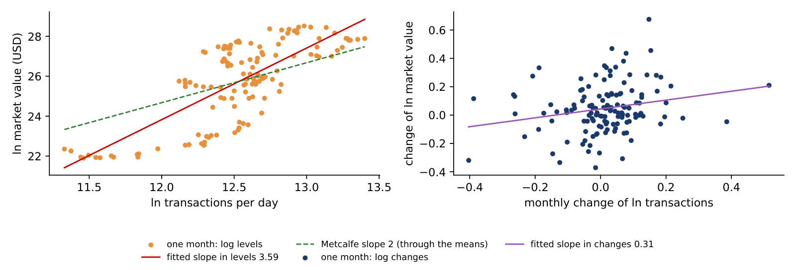
Section summary
Bitcoin's drawdowns are deep and long: \(-83.4\%\) at the worst, with 76% of days more than 10% below the record. An LPPL model fits the 2017 bubble closely after the fact, but its critical time moves with the estimation window. Metcalfe's law gives an elasticity of 3.59 in levels, but the relation is not cointegrated and falls to about 0.3 once the trend is removed.
Volatility must be annualised with the market's own calendar: formula (2.2) with \(A = 365\) gives 64.1% a year for Bitcoin, against 19.2% for the S&P 500. Daily returns are not Normal: the Jarque–Bera statistic (2.3) exceeds 10,000 for all four assets, and crash days are far more frequent than the Normal distribution allows. Volatility clusters: for Bitcoin the Ljung–Box statistic (2.4) with 10 lags is 212.7 for squared returns, against 20.2 for returns. Since 2020 Bitcoin co-moves with equities, like a risk asset, with an average correlation of 0.39 with the S&P 500.
Robust variance-ratio tests do not reject a random walk at horizons of 2 to 10 days, in any sub-period; this is not proof of efficiency. The LPPL model fits the 2017 bubble with \(R^2 \approx 0.98\), but \(\hat t_c\) moves with the window, so a good in-sample fit does not date the crash. Metcalfe's law in levels gives \(\hat b = 3.59\), with a standard error (SE) of 0.43, but there is no cointegration, and in monthly changes \(\hat b = 0.31\). Lecture 4 models the two main facts: volatility clustering, with GARCH, and heavy tails, with VaR 1% and ES 2.5%.
In brief
The five exercises use the numbers of the lecture. Each asks for an interpretation in a few sentences: what the number or test shows, what it does not show, and what follows for a decision about holding or valuing crypto assets.
In brief
The Appendix holds optional material for self-study. It measures the heaviness of the tails with the tail index, checks the stability of kurtosis, looks at weekdays, crisis episodes and safe havens, gives the details of the LPPL estimation and of the rolling estimates, and works through the variance-ratio statistic and a list of Bitcoin's large drawdowns.
Far in the tail, the probability that the daily loss \(L = -r\) exceeds a level \(x\) often follows a power law, \(P(L > x) \approx c\,x^{-\alpha}\) for large \(x\), where \(c > 0\) is a constant and \(\alpha\) the tail index. A smaller \(\alpha\) means a heavier tail, and moments of order \(\alpha\) or higher are infinite: with \(\alpha < 4\) the kurtosis does not exist. The estimator of Hill (1975) uses the \(k\) largest losses: \(\hat\alpha\) is the inverse of the average log ratio of each of these losses to the threshold \(L_{(k+1)}\), the next largest loss, and a 95% confidence interval (CI) is \(\hat\alpha(1 \pm 1.96/\sqrt k)\). Here \(k\) is 2.5% of the sample. Large ratios on average mean that the extreme losses lie far above the threshold, and give a small \(\hat\alpha\), a heavy tail.
In brief
The table reports the Hill estimates of the left tail (losses) and the right tail (gains) with 95% intervals, for daily returns since 2014 (Bitcoin, S&P 500, gold) and 2016 (Ethereum) to 18 September 2026. All left-tail indices are below 4, from 2.62 for Ethereum to 3.11 for gold, so the sample kurtosis of the four-asset table estimates a quantity that may not exist, as the next slides show. Crypto is more volatile than equities, but the shape of its tails is close: the intervals of Bitcoin, Ethereum and the S&P 500 overlap. For Bitcoin, losses have a heavier tail than gains, 2.71 against 3.37.
In brief
| left tail \(\hat\alpha\) | 95% CI | right tail \(\hat\alpha\) | 95% CI | |
|---|---|---|---|---|
| Bitcoin | \(2.71\) | \([2.20, 3.21]\) | \(3.37\) | \([2.74, 4.00]\) |
| Ethereum | \(2.62\) | \([2.10, 3.15]\) | \(3.09\) | \([2.48, 3.71]\) |
| S&P 500 | \(2.68\) | \([2.08, 3.29]\) | \(2.80\) | \([2.17, 3.43]\) |
| Gold | \(3.11\) | \([2.42, 3.80]\) | \(3.04\) | \([2.36, 3.71]\) |
The left panel plots the empirical probability that the standardised loss exceeds \(x\), on log-log scales, for Bitcoin and the S&P 500. A power-law tail is a straight line with slope \(-\alpha\); the Normal distribution, in red, bends down steeply. The right panel is a Hill plot: the estimate \(\hat\alpha\) against \(k\), the share of the largest losses used, with 95% bands, for 2018–2026. For Bitcoin \(\hat\alpha\) is 4.33 at \(k = 1\%\), 2.71 at 2.5%, 2.60 at 5% and 1.94 at 10%; for the S&P 500 it is 2.92, 2.81, 2.32 and 1.95. With a small \(k\) few observations enter and the bands are wide; with a large \(k\) the centre of the distribution enters and biases \(\hat\alpha\) downwards. The estimate is reported on the flat part of the plot, here \(k \approx 2.5\%\).
In brief
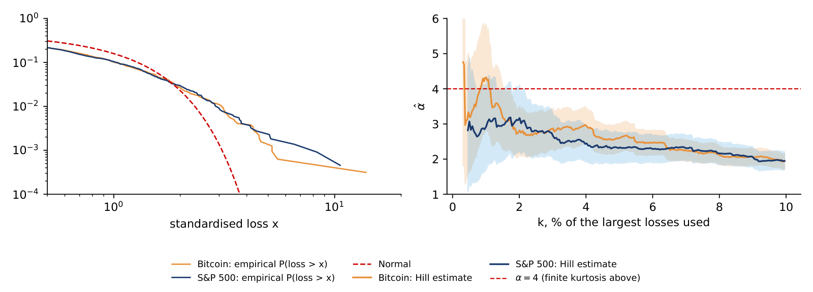
The chart computes Bitcoin's skewness (left) and excess kurtosis (right) on rolling windows of 365 days. The kurtosis ranges from 1.3 to 58.0; the maximum belongs to the window ending in October 2020, which contains 12 March 2020, and the latest value is 6.4. When that single day enters and later leaves the window, the estimate jumps by a factor of ten, and the skewness jumps with it. With a tail index below 4 the sample kurtosis has no stable limit, so a single kurtosis number for crypto returns should not be read as a fixed property of the asset.
In brief
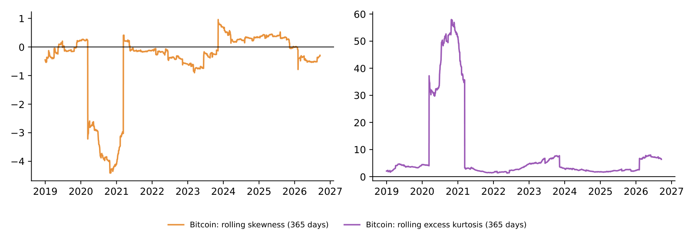
The chart shows the standard deviation of Bitcoin's daily returns by the weekday of the closing day, for 2014–2019, 2020–2023 and 2024–2026. There is no weekend effect in the mean return, but the variance at weekends is only 35–66% of the weekday variance, and the gap is largest on Saturdays in the two recent periods. Crypto trades on Saturdays, but banks, macroeconomic news and institutional traders do not, so risk still follows the traditional business calendar.
In brief
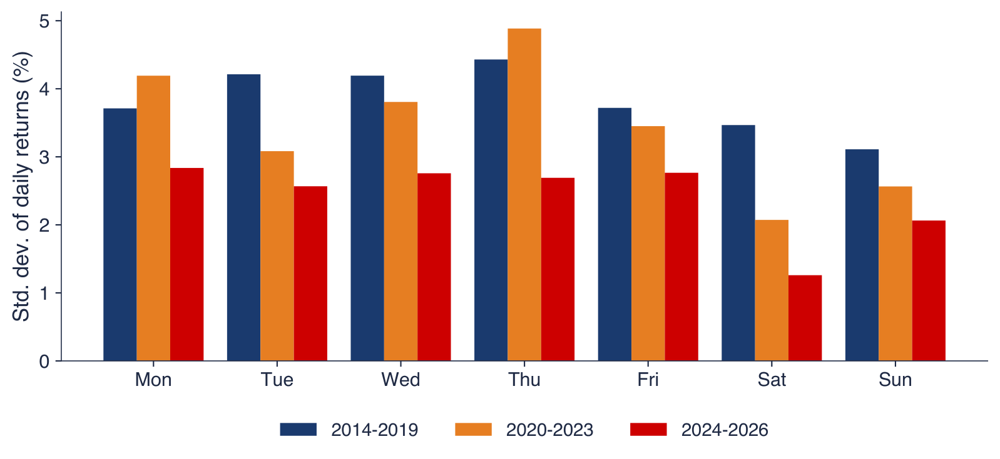
The table gives the cumulative log returns, in log-return percentage points, of the four assets over three crisis episodes; converted to simple returns with \(e^{r/100} - 1\), the COVID-19 losses were \(-33.4\%\) for Bitcoin, \(-48.1\%\) for Ethereum and \(-33.9\%\) for the S&P 500. The global COVID-19 shock hit crypto as hard as equities, while gold did not move. The two crypto-specific shocks, the collapse of TerraUSD in May 2022 and the bankruptcy of FTX in November 2022, cost Bitcoin and Ethereum at least 20% as simple returns and equities almost nothing. In these three episodes the link is asymmetric: the equity crash reached crypto, but the crypto crashes did not reach equities.
In brief
| Episode | period | Bitcoin | Ethereum | S&P 500 | gold |
|---|---|---|---|---|---|
| COVID-19 | 19 Feb – 23 Mar 2020 | \(-40.6\) | \(-65.5\) | \(-41.4\) | \(0.3\) |
| Terra/Luna | 5 – 12 May 2022 | \(-23.0\) | \(-33.8\) | \(-5.4\) | \(-3.0\) |
| FTX | 5 – 21 Nov 2022 | \(-29.9\) | \(-38.4\) | \(4.6\) | \(3.4\) |
Baur & Lucey (2010) define a hedge as an asset uncorrelated or negatively correlated with equities on average, and a safe haven as one uncorrelated or negatively correlated with equities in extreme market stress. The slide uses a simpler check: the mean return of an asset on the worst 5% of S&P 500 days, with a \(t\)-statistic. Over 2018–2026 these are 110 common days with the S&P 500 below \(-1.77\%\), on average \(-2.96\%\). On these days Bitcoin lost \(3.36\%\) on average (95% CI \(-4.72\) to \(-1.99\)) and Ethereum \(4.99\%\) (\(-6.68\) to \(-3.31\)), more than the equities themselves, while gold's mean was \(+0.01\%\) (\(-0.27\) to \(0.29\)). For gold a zero mean is not rejected; this does not show that its mean is non-negative, nor that gold is a safe haven in the sense of Baur & Lucey (2010).
In brief
The chart shows the mean daily returns of the previous slide as bars, with their 95% confidence intervals, on the 110 worst S&P 500 days of 2018–2026. The S&P 500 bar is the average of the selected days themselves; Bitcoin and Ethereum fall further, with wider intervals because their returns vary more, and gold stays at zero. For a corporate treasury, the reading is that in this sample Bitcoin lost on average on the days when equities were under stress.
In brief
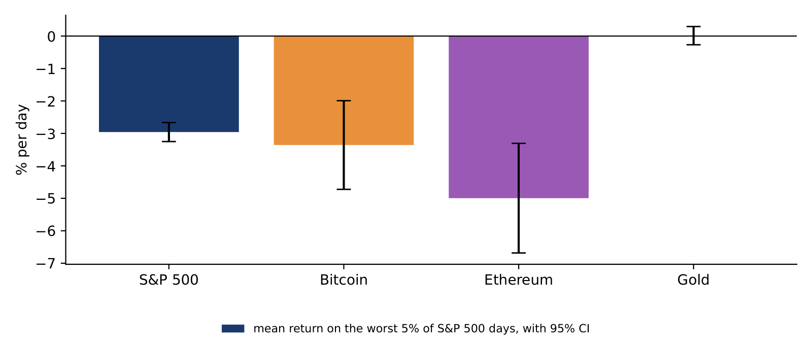
The LPPL formula (2.7) can be rewritten with \(C_1 = C\cos\phi\) and \(C_2 = C\sin\phi\), so that the log price is a linear function of \(A\), \(B\), \(C_1\) and \(C_2\) once \(t_c\), \(m\) and \(\omega\) are fixed. The estimation therefore has two steps: for given \((t_c, m, \omega)\), ordinary least squares gives the four linear parameters; a numerical search over \((t_c, m, \omega)\) then minimises the sum of squared errors. The objective has many local minima, so the search starts from many points and the model is fitted on many windows. The critical time is the least precise parameter: fits look convincing after a crash, and real-time warnings give false alarms.
In brief
The table reports three fits that all start on 1 January 2017 and end on 15 November, 1 December and 8 December 2017. In all three \(\hat B \approx -2.8\), indicating super-exponential growth, \(|\hat C|/|\hat B|\) is below 0.09 and \(R^2 \approx 0.98\), so a good fit does not mean a reliable forecast. The estimated \(\hat t_c\) moves from 4 January 2018 to 25 December 2017 to 8 December 2017, by four weeks when the window moves by three weeks; the lead, the number of days from the window end to \(\hat t_c\), falls from 50 to 24 to 0. On 15 November \(\hat m\) and \(\hat\omega\) sit on the bounds of the search, 0.9 and 13, a sign of a poorly identified fit, and on 8 December \(\hat t_c\) equals the last observation, a degenerate solution. In practice one fits many windows and reports the share that pass the filters, the log-periodic power law singularity (LPPLS) confidence indicator.
In brief
| window ends | \(n\) | \(\hat t_c\) | lead (days) | \(\hat m\) | \(\hat\omega\) | \(|\hat C|/|\hat B|\) | \(R^2\) |
|---|---|---|---|---|---|---|---|
| 15 Nov 2017 | 319 | 4 Jan 2018 | 50 | \(0.900\) | \(13.00\) | \(0.089\) | \(0.980\) |
| 1 Dec 2017 | 335 | 25 Dec 2017 | 24 | \(0.851\) | \(12.49\) | \(0.088\) | \(0.982\) |
| 8 Dec 2017 | 342 | 8 Dec 2017 | 0 | \(0.741\) | \(11.14\) | \(0.081\) | \(0.979\) |
The chart estimates the Metcalfe elasticity \(\hat b\) of formula (2.8) on rolling 36-month windows, with Newey–West 95% intervals; the red dashed line is Metcalfe's \(b = 2\). The estimate peaks at 2.70 for the window ending in March 2018, turns negative in 2021–2023, when market value fell while transactions grew, and ends at 0.98 in October 2025. The interval contains 2 in only 28% of the windows, so the data show no stable network-value elasticity.
In brief
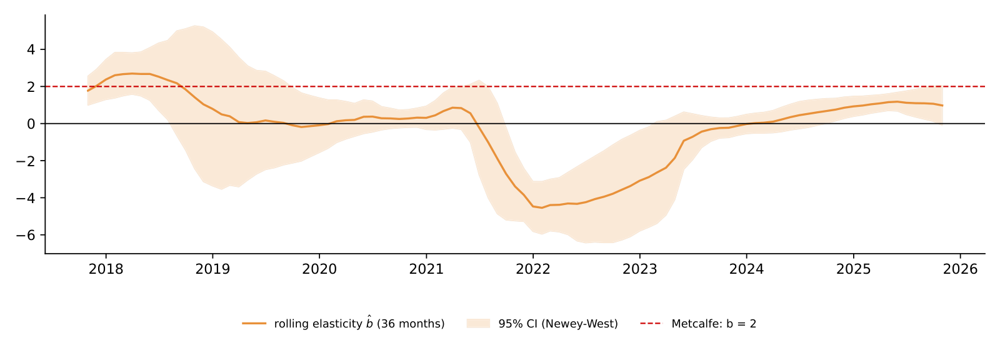
The rolling volatility on day \(t\) is the standard deviation of the last \(w\) returns, multiplied by \(\sqrt{A}\), where \(A\) is 365 for crypto and 252 for equities; the window moves forward one day at a time. The choice of \(w\) is a trade-off: a short window reacts fast but is noisy, a long window is smooth but late. The standard error of the estimate is roughly \(\hat\sigma/\sqrt{2w}\), about 13% of \(\hat\sigma\) for \(w = 30\), so a monthly volatility of 50% is known only to within several percentage points. Lecture 4 replaces the window by a model, the exponentially weighted moving average (EWMA) or GARCH.
In brief
The rolling correlation is the Pearson correlation of Bitcoin and S&P 500 returns on the last \(w = 250\) common days, about one year of equity trading. Its standard error is approximately \((1 - \rho^2)/\sqrt w\), about 0.06 here, so changes smaller than 0.1 are noise. The two markets have different calendars. The prices are joined on common days first and the returns computed afterwards, so that Monday's Bitcoin return covers Friday to Monday, like the equity return. The closes are also not simultaneous: the crypto close is usually taken at midnight in Coordinated Universal Time (UTC), the equity close at 16:00 New York time, and weekly returns give a check on this mismatch.
In brief
Under volatility clustering, the variance-ratio test that assumes independent and identically distributed (i.i.d.) returns rejects too often. The robust statistic \(Z^*(q)\) of Lo & MacKinlay (1988) divides \(\widehat{\mathrm{VR}}(q) - 1\) by a standard error built from \(\hat\delta_j\), an estimate of the variance of the lag-\(j\) autocorrelation that allows the volatility to change over time; it is approximately standard Normal, and the random walk is rejected at 5% when \(|Z^*(q)| > 1.96\). The variance ratio is also linked to the autocorrelations: \(\mathrm{VR}(q) \approx 1 + 2\sum_{j=1}^{q-1}(1 - j/q)\rho(j)\), so positive autocorrelations push it above 1 and negative ones below 1.
In brief
For \(q = 2\) the link formula reduces to \(\mathrm{VR}(2) \approx 1 + \rho(1)\). For Bitcoin since 2014, \(\hat\rho(1) = -0.022\), so \(\mathrm{VR}(2) \approx 0.978\), close to the direct estimate of 0.977. For the S&P 500 over the same period, \(\hat\rho(1) = -0.126\) gives \(\mathrm{VR}(2) \approx 0.874\), against a direct estimate of 0.875. The S&P 500 shows mild daily mean reversion, typical of an index, where the bid–ask bounce and stale prices of some members create negative autocorrelation. The robust test still does not reject, because volatility clustering makes the variance of \(\widehat{\mathrm{VR}}\) large.
In brief
The chart plots \(\widehat{\mathrm{VR}}(q)\) for horizons \(q = 2\) to 30 days over 2018–2026; the shaded area is the robust 95% band for Bitcoin under the random walk, which widens with the horizon. Bitcoin's ratio is 0.989 at 5 days (\(Z^* = -0.19\)) and 1.077 at 20 days (\(Z^* = 0.66\)), and Ethereum's is 1.11 at 20 days (\(Z^* = 0.95\)), so the crypto ratios rise slowly above 1 without leaving the band. The S&P 500 ratio is 0.796 at 20 days (\(Z^* = -0.76\)): the point estimate suggests mean reversion, but it is not significant.
In brief
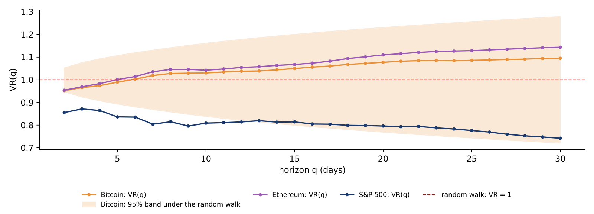
The table lists the episodes since September 2014 in which Bitcoin fell by more than 50% from a record, with the peak and trough dates and prices in USD, the depth, the date of the next record and the days under water. There are five such falls in twelve years, so a crash of this size is a regular event rather than an exception. The falls after the peaks of December 2017 and November 2021 took 1,080 and 847 days to recover, and the latest fall, from 124,753 USD on 6 October 2025 to 58,559 USD on 30 June 2026, \(-53.1\%\), had not been recovered by 18 September 2026.
In brief
| Peak | USD | trough | USD | depth (%) | new record | days under water |
|---|---|---|---|---|---|---|
| 2014-09-17 | 457 | 2015-01-14 | 178 | \(-61.1\) | 2015-12-15 | 454 |
| 2017-12-16 | 19 497 | 2018-12-15 | 3 237 | \(-83.4\) | 2020-11-30 | 1 080 |
| 2021-04-13 | 63 503 | 2021-07-20 | 29 807 | \(-53.1\) | 2021-10-19 | 189 |
| 2021-11-08 | 67 567 | 2022-11-21 | 15 787 | \(-76.6\) | 2024-03-04 | 847 |
| 2025-10-06 | 124 753 | 2026-06-30 | 58 559 | \(-53.1\) | not yet | – |
The peaks of the cosine term in (2.7) satisfy \(\omega\ln(t_c - t_k) - \phi = 2\pi k\), so the distance from one peak to \(t_c\) is a constant multiple of the distance from the previous one: \((t_c - t_{k+1})/(t_c - t_k) = e^{-2\pi/\omega}\). For the Bitcoin 2017 fit, \(\hat\omega = 12.49\) gives \(e^{-2\pi/12.49} = 0.605\): a peak 30 days before \(t_c\) is followed by peaks 18.1, 11.0 and 6.6 days before \(t_c\). The inverse ratio, \(\lambda = e^{2\pi/\omega} = 1.65\), is the "preferred scaling ratio" of the hierarchy of traders in Johansen, Ledoit & Sornette (2000). Shrinking gaps between local tops are the visual signature of an LPPL bubble.
In brief